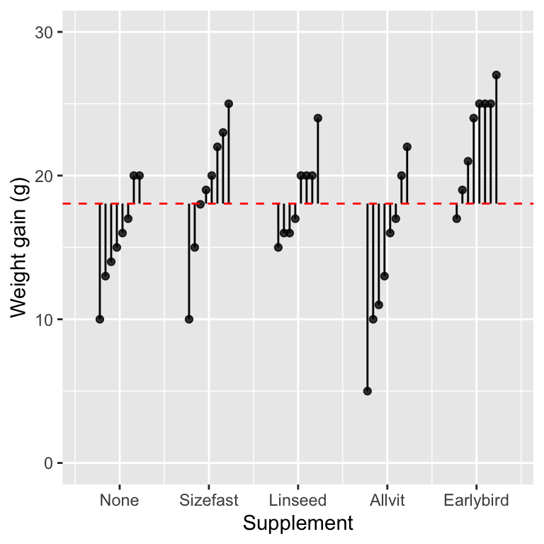
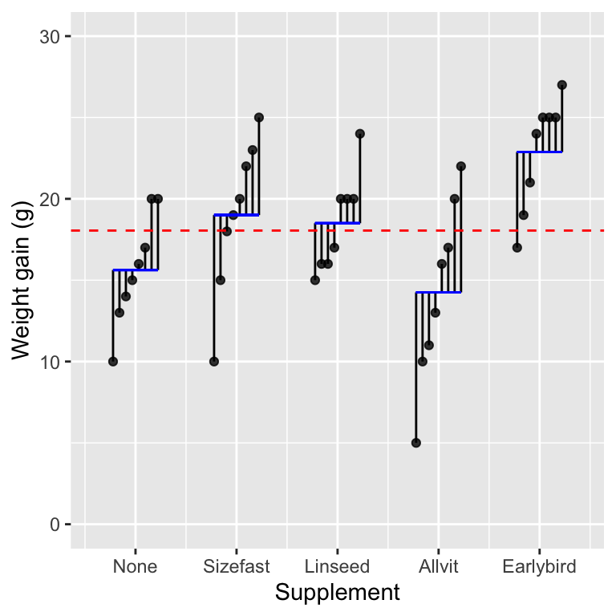

Chapter 23 Linear vs non-linear models
23.1 Introduction
We have seen how to use simple linear regression to characterise the dependence of one numeric variable on another. The most obvious assumption of that model is that the dependence between the two variables follows a straight line. What should we do when the relationship of interest is not so simple and instead follows a non-linear curve of some kind?
One option is to transform one or both variables to enforce a straight-line relationship. Sometimes this works well, but on other occasions, it can prove tricky to identify a transformation that works. In any case, for some kinds of problems, we prefer to work with variables on the scale we measured them because this makes it easier to interpret the relationship.
This is where non-linear regression is useful. Non-linear relationships arise all the time in biology. Our goal in this chapter is to set out what we mean by the term ‘non-linear’ when dealing with regression models. To do this, we will establish the link between two models we have already studied: ANOVA and linear regression. Once that linkage is clear, it is relatively straightforward to define linear and non-linear models. The next chapter will cover the practical details of working with non-linear regression models in R.
23.2 The relationship between regression and ANOVA
Though not apparent at first, ANOVA models can be viewed as a kind of regression analysis. We will look at the corncrake growth data again to understand this idea. This was the study where scientists wanted to determine how four different diet supplements affected the initial growth of captive-bred corncrake hatchlings.
Imagine that we have read these data into a data frame called corn_crake. The weight gain measurements are stored in the WeightGain variable, and the food supplement treatments are encoded in the categorical Supplement variable:
glimpse(corn_crake)## Rows: 40
## Columns: 2
## $ Supplement <chr> "None", "None", "None", "None", "None", "None", "None", "No…
## $ WeightGain <dbl> 13, 20, 17, 16, 15, 14, 10, 20, 15, 18, 10, 22, 23, 19, 25,…We can repeat the one-way ANOVA global significance test with these data using the usual R code:
diet_model <- lm(WeightGain ~ Supplement, data = corn_crake)
anova(diet_model)## Analysis of Variance Table
##
## Response: WeightGain
## Df Sum Sq Mean Sq F value Pr(>F)
## Supplement 4 357.65 89.413 5.1281 0.002331 **
## Residuals 35 610.25 17.436
## ---
## Signif. codes: 0 '***' 0.001 '**' 0.01 '*' 0.05 '.' 0.1 ' ' 1This shows a significant effect of supplement on the weight gain of the corncrake hatchlings (F=, d.f.=4,35; p<0.01).
Now let’s look at how this same analysis can be carried out using a type of regression model with numeric predictors. There are four steps to this.
23.2.0.1 Step 1
We need to construct a new representation of the data. Rather than including one categorical variable that labels the observations from each supplement (+control), we construct a series of binary (i.e. 0/1) indicator variables. We need one indicator variable for each supplement category. Each indicator variable takes the value ‘1’ if an observation belongs to its corresponding supplement and ‘0’ otherwise.
Here is one way to create these data using R:
corn_crake_reg <-
mutate(corn_crake,
Allvit = ifelse(Supplement == "Allvit", 1, 0),
Earlybird = ifelse(Supplement == "Earlybird", 1, 0),
Linseed = ifelse(Supplement == "Linseed", 1, 0),
Sizefast = ifelse(Supplement == "Sizefast", 1, 0),
None = ifelse(Supplement == "None", 1, 0)) %>%
select(-Supplement)This code creates a tibble called corn_crake_reg containing the original WeightGain variable and five new indicator variables called Allvit, Earlybird, Linseed, Sizefast and None:
print(corn_crake_reg, n = 40)## # A tibble: 40 × 6
## WeightGain Allvit Earlybird Linseed Sizefast None
## <dbl> <dbl> <dbl> <dbl> <dbl> <dbl>
## 1 13 0 0 0 0 1
## 2 20 0 0 0 0 1
## 3 17 0 0 0 0 1
## 4 16 0 0 0 0 1
## 5 15 0 0 0 0 1
## 6 14 0 0 0 0 1
## 7 10 0 0 0 0 1
## 8 20 0 0 0 0 1
## 9 15 0 0 0 1 0
## 10 18 0 0 0 1 0
## 11 10 0 0 0 1 0
## 12 22 0 0 0 1 0
## 13 23 0 0 0 1 0
## 14 19 0 0 0 1 0
## 15 25 0 0 0 1 0
## 16 20 0 0 0 1 0
## 17 20 0 0 1 0 0
## 18 24 0 0 1 0 0
## 19 17 0 0 1 0 0
## 20 16 0 0 1 0 0
## 21 20 0 0 1 0 0
## 22 20 0 0 1 0 0
## 23 15 0 0 1 0 0
## 24 16 0 0 1 0 0
## 25 22 1 0 0 0 0
## 26 5 1 0 0 0 0
## 27 10 1 0 0 0 0
## 28 16 1 0 0 0 0
## 29 11 1 0 0 0 0
## 30 17 1 0 0 0 0
## 31 20 1 0 0 0 0
## 32 13 1 0 0 0 0
## 33 17 0 1 0 0 0
## 34 25 0 1 0 0 0
## 35 24 0 1 0 0 0
## 36 25 0 1 0 0 0
## 37 25 0 1 0 0 0
## 38 19 0 1 0 0 0
## 39 27 0 1 0 0 0
## 40 21 0 1 0 0 0Take a look at the last column (None). The first eight values are ‘1’, reflecting the fact that the first eight rows of the data set are the control cases (i.e. no supplement). The remaining values of None are all ‘0’ because they correspond to rows with data from chicks that received a supplement. The same logic applies to the other four indicator variables.
The information in the data is unchanged. All we have done is alter how the different supplement identities are represented.
23.2.0.2 Step 2
The next step is to fit a minimal model to the data, called an ‘intercept only’ or ‘null’ model. We fit this using the lm function:
mod_null <- lm(WeightGain ~ 1, data = corn_crake_reg)The formula WeightGain ~ 1 tells R to fit a model with exactly one coefficient—the overall grand mean of all the data. In graphical terms we can visualise this using one of the plots we made to explore how ANOVA works:

The intercept (i.e. the grand mean) is shown by the vertical position dashed red line. The vertical lines show the distance between each observation and the grand mean. Therefore, the vertical lines are residuals from the ‘intercept only’ model. These capture the total variation in the data.
23.2.0.3 Step 3
In the third step, we use lm to fit a regression model using the indicator variable version of the data set. We have to include the indicator variables as separate terms when we do this:
mod_mreg <- lm(WeightGain ~ 0 + Allvit + Earlybird + Linseed + Sizefast + None, data = corn_crake_reg)The unusual ‘0’ in the formula is a trick to force R to fit the particular model we want. lm fits a regression because the indicator variables contain numeric values (i.e. 0 or 1). This model can be thought of as something called a multiple regression. It is a multiple regression because the model involves more than one predictor variable.
This model involves five regression coefficients (a.k.a. ‘slopes’). Each of these describes the change in weight gain that occurs if we alter the corresponding indicator variable by one unit. Since the indicator variables only take values of ‘0’ or ‘1’, these coefficients describe the mean weight gain associated with each supplement. We can see those values by printing the model object:
print(mod_mreg)##
## Call:
## lm(formula = WeightGain ~ 0 + Allvit + Earlybird + Linseed +
## Sizefast + None, data = corn_crake_reg)
##
## Coefficients:
## Allvit Earlybird Linseed Sizefast None
## 14.25 22.88 18.50 19.00 15.62Those are the supplement group means. We can visualise this model as follows:

The coefficients of the regression model are denoted by the vertical positions of the horizontal blue lines, i.e. the mean weight gain associated with each supplement group. The variability of those means around the overall grand mean is the the among group variability. This describes the variation explained by the indicator variable model. The vertical lines capture the variation due to differences among individual chicks within each group after accounting for the mean supplement effect.
This figure was used earlier in the book to explain how ANOVA works. That is no coincidence. Fitting an ANOVA model really is nothing more than ‘regression with indicator variables’.
23.2.0.4 Step 4
The final step is to evaluate the significance of the supplement effect. We do this with the anova function. However, we have to use anova in a new way by passing it two models—the intercept-only model and the regression-with-indicators model:
anova(mod_null, mod_mreg)## Analysis of Variance Table
##
## Model 1: WeightGain ~ 1
## Model 2: WeightGain ~ 0 + Allvit + Earlybird + Linseed + Sizefast + None
## Res.Df RSS Df Sum of Sq F Pr(>F)
## 1 39 967.90
## 2 35 610.25 4 357.65 5.1281 0.002331 **
## ---
## Signif. codes: 0 '***' 0.001 '**' 0.01 '*' 0.05 '.' 0.1 ' ' 1When passed two like this, anova uses the models to construct a statistical significance test. Here is the logic of that test:
- The null hypothesis is embodied by the simpler of the two models. This has to be a special case of the more complex model.
- The more complex model incorporates the additional effects we are interested in testing (e.g. differences between groups).
anovauses the variability explained by the two models to construct an F-test of the significance of the target effect.
In this example, the simpler model (mod_null) only contains the grand mean. This is equivalent to assuming no effect of diet supplement on weight gain. The more complex model (mod_mreg) allows weight gain to vary according to supplement. Therefore, if the F-test produced by anova is significant, this is taken as evidence that supplement affects weight gain. That is what we find: the test reveals a significant effect of supplement on the weight gain of corncrake hatchlings (F=5.1; d.f.= 4,35; p<0.01).
Look at the p-value, the test statistic (F) and the degrees of freedom from the test. These are the same as those produced by the standard one-way ANOVA global significance test. This is because the convoluted regression-with-indicators analysis and standard ANOVA analyses are functionally identical.
Linear regression and ANOVA are not so different after all. Whenever we work with an ANOVA in R, lm uses the formula we supply to make something called a ‘design matrix’ behind the scenes. The design matrix is a representation of the model with the series of 0/1 indicator variables required to estimate the associated group means (or, more usually, differences between means).
23.3 Linear models
It turns out that many of the statistical models we have seen so far are special cases of something called the General Linear Model. The only thing that distinguishes the different cases is the type of predictor variables they accommodate:
- One-way ANOVA: one categorical predictor
- Multi-way ANOVA: two or more categorical predictors
- Simple Regression: one numeric predictor
- Multiple Regression: two or more numeric predictors
- ANCOVA: mixture of categorical and numeric predictors
Every one of these is a special case of the General Linear Model. To understand the key properties of the General Linear Model, we need to express it in mathematical terms. Think back to the earlier chapter on parametric statistics. We introduced the idea of a statistical model as a device to describe how samples of data are generated from a hypothetical population. We also mentioned a particular model for the relationship between two numeric variables:
\[y_i = a + b \times x_i + \epsilon_i\] That equation is the mathematical representation of a simple linear regression model, where \(y_i\) is the response variable and \(x_i\) is the predictor variable. This model has two parts:
- The systematic component (\(a + b \times x_i\)) describes the general relationship between the \(y_i\) and \(x_i\). This is the equation of a straight line with an intercept \(a\) and slope \(b\) parameter. Those two parameters are known as the coefficients of the model.
- The random component (\(\epsilon_i\)) describes how the individual \(y_i\) values deviate from their expected values on the line. Those are the residuals. These residuals are assumed to follow a normal distribution in a regression model.
Fitting a regression model boils down to finding the values of \(a\) and \(b\) that minimise the variability associated with \(\epsilon_i\). The normality assumption justifies using F tests to carry out statistical significance tests with the model.
We can take that basic model description and expand it to represent a more complex model with multiple predictors:
\[y_i = a + b_1 \times x_{1i} + b_2 \times x_{2i} + b_3 \times x_{3i} + ... + \epsilon_i\] Compared to the simpler model, the thing that has changed is the systematic part of the model:
- The \(x_{1i}\), \(x_{2i}\), \(x_{3i}\) represent a set of predictor variables used to explain variation in the response variable, \(y_i\).
- The \(a\), \(b_1\), \(b_2\), \(b_3\) are the model coefficients. These describe the relationship between the response and predictors.
- The \(+ ... +\) is a generic placeholder for all other predictors. We wrote out the first three, but there could be many more.
The random component (\(\epsilon_i\)) is the same as before. That describes the deviations of the \(y_i\) values from their expected values given by the systematic part of the model.
Now we arrive at the important part of this section. If we assume the \(\epsilon_i\) come from a normal distribution, then that equation describes the General Linear Model. The various models listed above can all be written in the form of that equation. Numeric predictors enter into the model unchanged. Categorical predictors are included by expanding them into a series of 0/1 indicator variables.
The word ‘general’ in the name of the General Linear Model refers to the fact that the model encompasses various different special cases. The word ‘linear’ needs more unpacking. That relates to the mathematical form of the model. To be precise, it relates to systematic part of the model, which is called as the linear predictor.
A linear predictor is made up of multiple parts, where each part is the product of a parameter and an associated predictor or derived index variable. The value of the linear predictor is found by adding those parts together. That’s exactly how the General Linear Model equation works:
\[y_i = a + b_1 \times x_{1i} + b_2 \times x_{2i} + b_3 \times x_{3i} + ... + \epsilon_i\]
Whenever the systematic part of a statistical model can be expressed in that form, the model is said to be ‘linear in its parameters’. This linearity feature of the parameters allows mathematicians to use well-established, robust methods to identify best-fitting models and construct statistical significance tests. That’s one reason why the General Linear Model is so widely used.
People often abbreviate the name to ‘Linear Model’ or ‘LM’ because saying General Linear Model all the time soon gets tedious. This is where the lm function gets its name.
23.4 Non-linear models
Now that we know what makes a linear model a linear model, we can finally address the actual topic of this chapter—non-linear regression models. A non-linear regression model is any parametric model for which the systematic component is not linear in its parameters. This is best understood by example.
There are many ways to express non-linear regression models, ranging from comparatively simple to very complex. At their simplest, they look like this:
\[y_i = f(x_i) + \epsilon_i\] In this formulation, there is one predictor variable. The \(x_i\) are the values of that predictor variable, the \(y_i\) are the corresponding values of the response variable, \(f\) is a non-linear function describing the systematic part of the model, and the \(\epsilon_i\) are the residual deviations.
Here are a few concrete examples of what we might use for the function \(f\):
Power function:
\[f(x_i) = a \times x_i^b\] Raising the \(x_i\) to the power of the parameter \(b\) is what makes this a non-linear regression model.
Exponential function:
\[f(x_i) = a \times e^{b \times x_i}\] The exponentiation of the \(b \times x_i\) is what makes this a non-linear regression model.
Michaelis–Menten equation for enzyme kinetics:
\[f(x_i) = V_{max}\frac{x_i}{K_m + x_i}\] The parameters of this model are the maximum reaction rate (\(V_{max}\)) and the Michaelis constant \(K_m\). The non-linearity arises from the ratio of the terms involving the predictor variable.
What happens if we fix the values of parameters \(b\) or \(K_m\) in those examples, meaning they do not have to be estimated from data? Those three models could then be rewritten as:
\[f(x_i) = a \times z_i\]
…where \(z_i\) is the part of the equation involving \(x_i\). For example, if \(b\) set to 2 in the power function, then \(z_i = x_i^2\). In that scenario, the function \(f(x_i)\) is now linear in its parameters because we only need to estimate \(a\).
This observation highlights an important point—it is the linearity of the unknown parameters that distinguishes linear and non-linear regression models.
23.5 Why do we need non-linear regression models?
Non-linear regression models are useful because they allow us to model relationships that involve curves. For example, the Michaelis–Menten equation looks like this:

The Michaelis–Menten equation describes the dependence of an enzyme’s reaction rate (\(y\)) on its substrate concentration (\(x\)). This is a saturating function — reaction rate increases a lot with small increases in substrate at low concentrations, but the rate of increase tails off at higher concentrations. That kind of relationship obviously requires a non-linear model.
We can’t cover every important aspect of non-linear regression modelling in a book like this. What we can do is develop a workflow for dealing with simple non-linear regression models in R and highlight some of the key concepts along the way. We will do that in the next chapter.